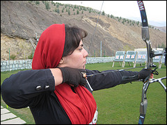
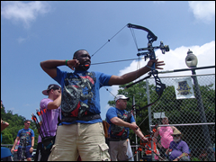

Amy Smith
Amy truly has a passion for archery.
She comes from a long line of hunters, fisherman, and trappers
of Canada. Amy places a strong emphasis on safety and is
enthusiastic about teaching. Amy also loves fitness, and has
been a YMCA group exercise and personal trainer for over 18 years.

Derek Jenkins
Derek is a Washington native and an
experienced outdoorsman with many years hunting, fishing,
skiing, canoeing, archery, shooting and minimalistic camping.
His skillful mastery of bushcraft and wilderness survival
knowledge helps define his character. He enjoys handcrafting
his own long bows, flint knapped primitive arrows and making
custom leather products.

Nathan Lee
Nathan is an USA Archery Certified
Level 3 NTS – Coach and has been teaching archery since 2009.
He has been interested in archery since he nocked his first
arrow while a Boy Scout at Scout camp. Nathan has many years
of experience teaching people of all ages, experience gained
as a Martial Arts Instructor and Studio Manager.